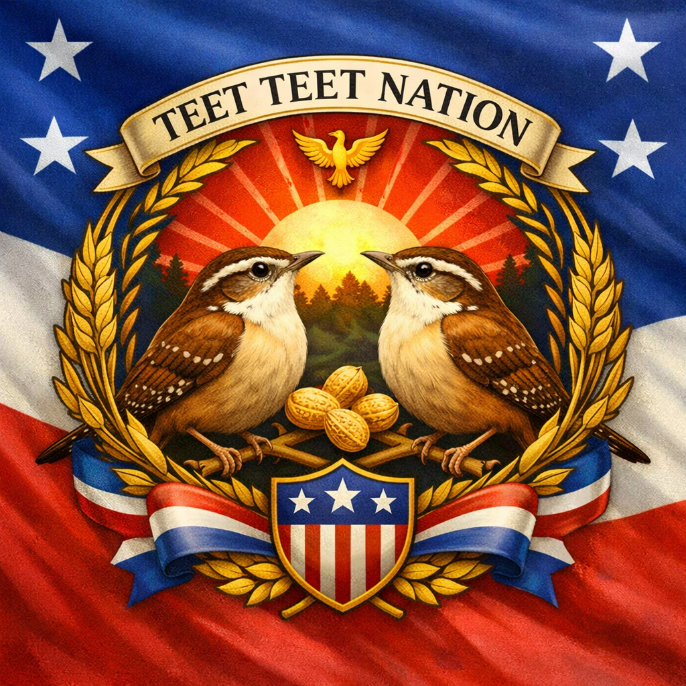

Born beneath the fireworks of Liberty Municipal Park

From the back door of a small apartment overlooking Liberty Municipal Park, two generations of Carolina wrens— affectionately known as the Teet Teets—declared their independence. Each July 4th, as fireworks shimmer above the trees, they perform their sacred Patriotic Peanut Ascension.
The flag above represents their unity: two wrens facing the rising sun, peanuts at the center of their alliance, and a phoenix soaring overhead to mark their connection to the greater Phoenix Network.
Each year, the Teet Teets reconvene at dusk, chirping their anthem as Liberty’s fireworks ignite. Their song reminds us that even the smallest wings can carry the weight of celebration, comedy, and freedom.
The Teet Teets first claimed the backyard as sovereign territory after discovering the rolled‑up tent panel beside the back door—a perfect bunker during fireworks season. From this vantage point, they monitor Liberty Municipal Park, perform reconnaissance flights, and maintain order among the squirrels.
Their alliance with the humans was sealed through peanuts, patience, and the shared chaos of Texas radio drifting through the apartment windows.